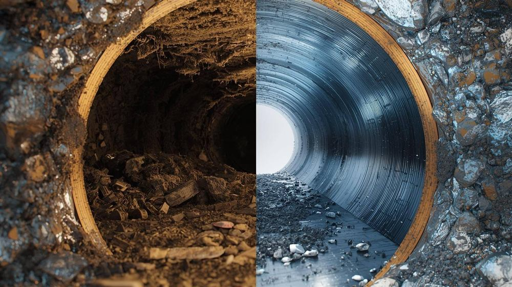
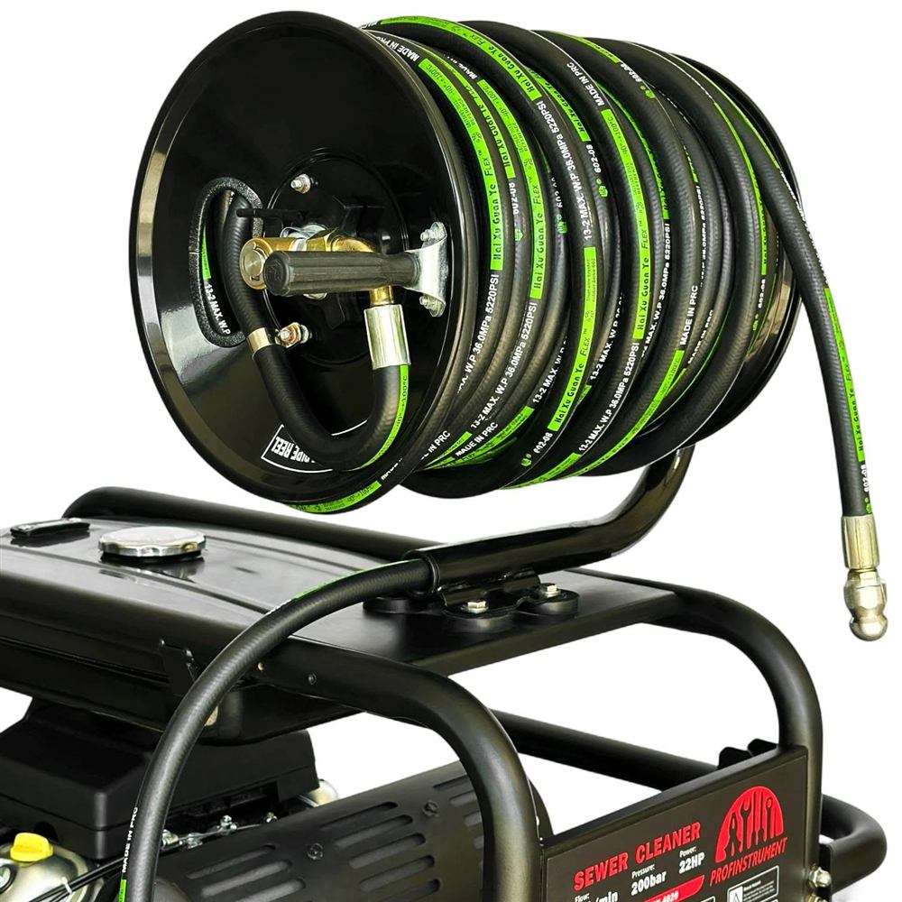
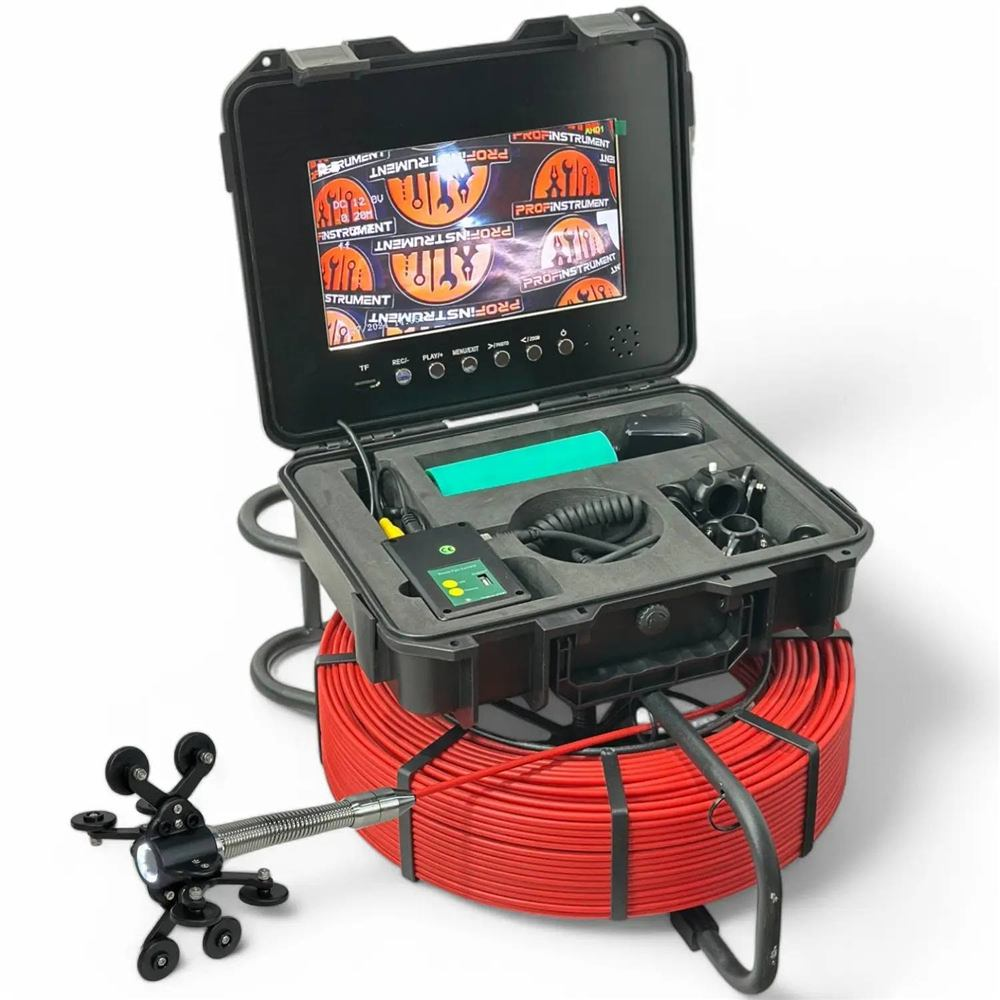
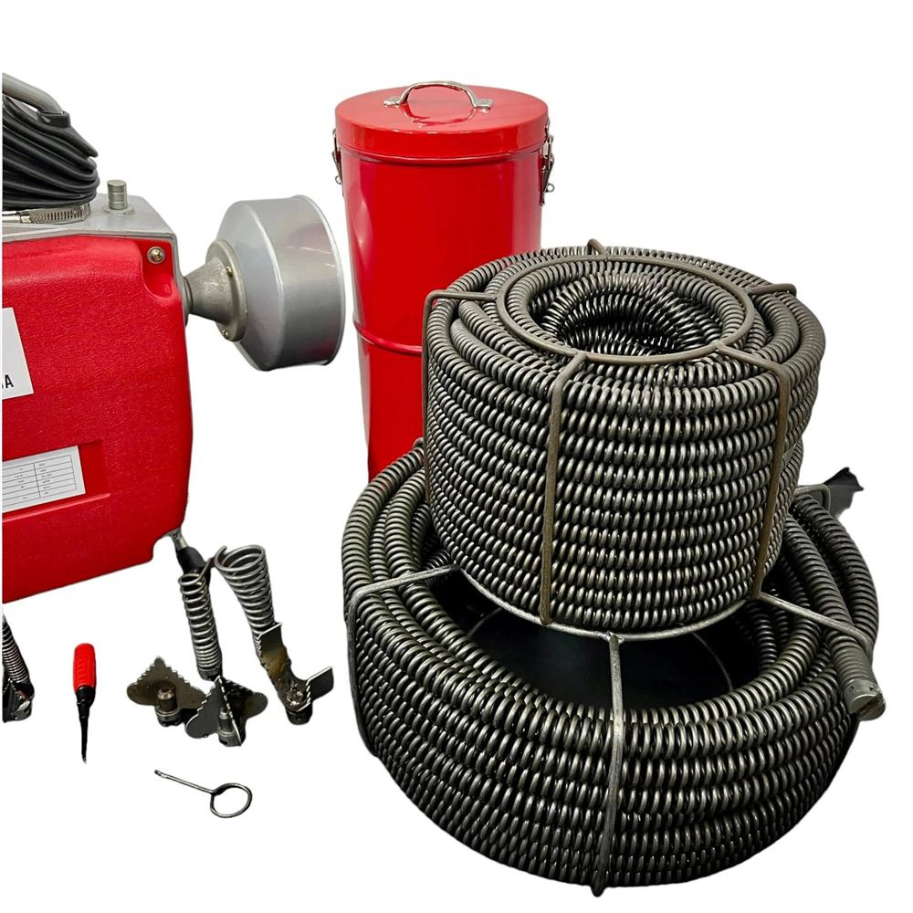
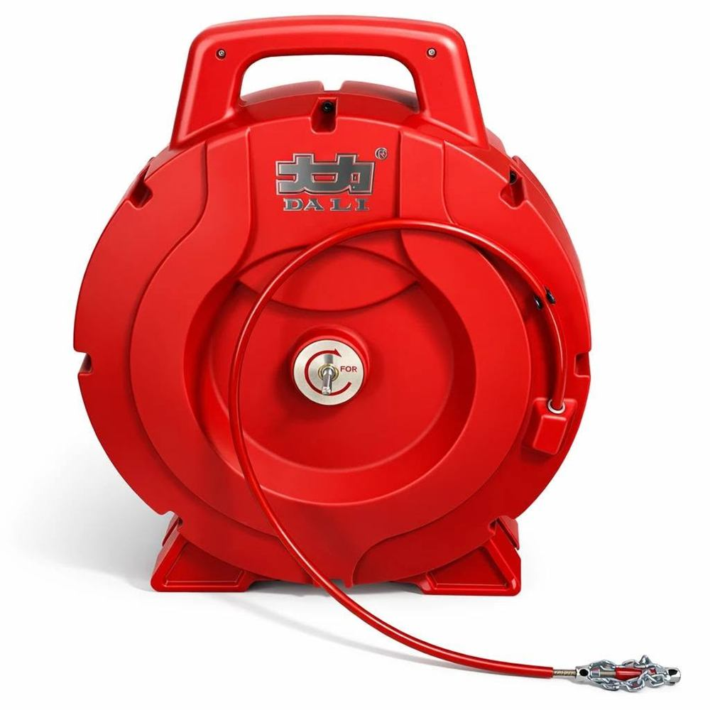

Гідродинамічне прочищення труб від 32 до 200 мм під високим тиском — змиває жир і наріст повністю, а не просто пробиває отвір. Виїжджаємо по місту, області та в дотичні райони сусідніх областей.
Працюємо щодня з 08:00 до 22:00. Екстрений виїзд — за домовленістю.
Повний цикл робіт із каналізацією — від усунення засмічення до регулярного обслуговування об'єктів.
Промивання зовнішньої каналізації водою під високим тиском. Вимиває всі налипання зі стінок труби — ефект тримається роками.
труби 110–200 мм · шланг 50 мПрочищення труб у квартирах і будинках: кухня, ванна, стояки. Механічна та гідродинамічна техніка залежно від засмічення.
труби 32–160 ммКамера проходить трубою до 50 метрів і показує, де саме проблема: засмічення, просідання, корінь чи руйнування труби.
довжина до 50 мВстановлення та регулярне обслуговування жировловлювачів для кафе, ресторанів і харчових виробництв.
монтаж + сервісРегулярне обслуговування систем каналізації для бізнесу та ОСББ: профілактика замість аварій.
за договоромКаналізація стала «тут і зараз»? Телефонуйте — екстрені виїзди можливі й поза основним графіком, за домовленістю.
08:00–22:00 + екстреноПісля троса жировий наріст залишається на стінках — і засмічення повертається за кілька тижнів. Вода під високим тиском вимиває налипання повністю, до чистої труби.
Жир і відкладення лишаються на стінках. Труба знову заростає — проблема повертається.
Високий тиск змиває жир і наріст зі стінок повністю. Забудете про проблему на роки.

Працюємо професійним обладнанням — саме воно дає результат, який тримається роками, а не до наступного місяця.




Описуєте проблему: що і де забилось. Одразу зорієнтуємо по часу виїзду.
Оцінюємо засмічення на місці. За потреби — відеодіагностика, щоб знайти точну причину.
Називаємо вартість до початку робіт — і вона не змінюється в процесі.
Прочищаємо трубу, перевіряємо стік разом із вами. Радимо, як уникнути повторення.
Реальні роботи, реальна техніка. Подивіться, як виглядає прочистка на практиці.
Базуємось у Тернополі, працюємо по всій області та в дотичних районах сусідніх областей.
А також дотичні райони Хмельницької, Львівської, Івано-Франківської, Рівненської та Чернівецької областей. Не знайшли свого міста — зателефонуйте, узгодимо виїзд.
Щодня з 08:00 до 22:00 · Тернопіль та область
+38 (068) 324-83-84